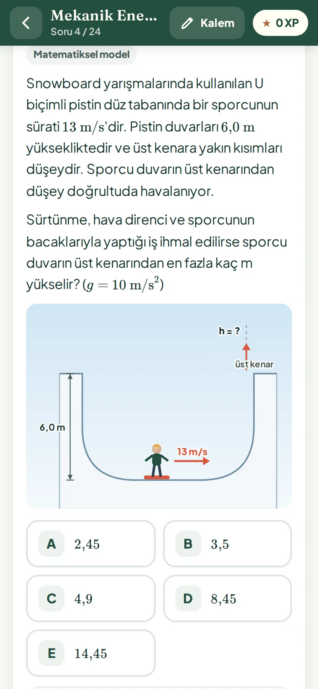

YENİ / YAPABİLİRİM 1010. SINIF · TELEFON, TABLET, PDF
Yapabilirim 10
10. Sınıf Fizik: not, soru ve adım adım çözüm. 20 konunun notu, tablo ve grafikli yeni sınav tarzı sorular. Kalemle çöz, kendi kitapçığını yazdır.
İçerikte neler var?
4 ünite, 20 konu ve 480 soru; her konuda iki bağlam seti, yanlış şıkkın nedenini gösteren açıklamalar, deneme modu, XP ve ilerleme takibi. Lisans senin adına kayıtlıdır ve yalnızca 10. sınıfı açar; telefon, tablet ve bilgisayarında çalışır.
₺599Öğrenci · tek ödeme